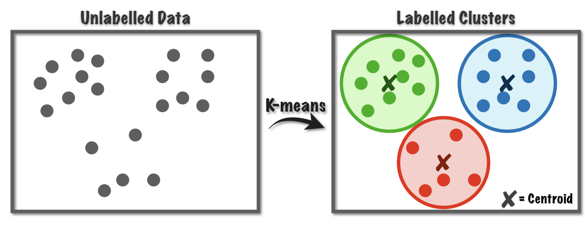

Unsupervised Detection: K-Means Clustering
Unsupervised learning is a machine learning method through which unlabeled data is labelled. The advantage of using unsupervised learning to detect coronal holes and active regions is that it removes user interference and an individual's definition of a coronal hole from the process. Despite the minimal user interference, there are certain hyper parameters that must be selected by the individual and these have been optimized using various industry techniques to ensure that we have the least amount of user interference as possible.
The algorithm used for our unsupervised detection model is known as K-Means. This is an unsupervised method of clustering. The basic idea is the algorithm assigns n samples/observations to k clusters whereby each observation belongs to the cluster with the nearest cluster centroid. Each sample/observation receives a cluster label based on both spatial and intensity data, and these labels are then grouped into coronal holes and active regions. You can plot each detection individually, or both active regions and coronal holes on the same map.
You can find the K-Means unsupervised detection pipeline code
here.
The machine learning functions are found here.
K-Means Clustering
- select cluster centers
- calculate distance between each sample and cluster centers
- assign data point to closest cluster center
- calculate new cluster centers
- recalculate the distance between each data point and newly obtained cluster centers
- continue until convergence

Figure: Basic Idea of K-Means Clustering. Each of the n samples are assigned to k clusters based upon the closest cluster center.
Advantages
- unsupervised
- no requirement of segmentation masks or labeling
- minimal user interference
- easy to create multiple cluster types (find AR as well)
- can basically regenerate EUV map — use for prediction
Example Images
Below we can see example images for both coronal hole detection and both coronal hole and active region detection for a synchonic map.
CHD Unsupervised Map

CHD and ARD Unsupervised Map

Example Movies
Here are some example movies of coronal hole detection over short time spans.
Comparison with Brute Force Detection
We look to compare our unsupervised learning detection method with the brute force (EZSEG) detection method currently used. This comparison was done both visually and by plotting coronal hole areas over time.
Here we can see a comparison of CH detection maps using the two different detection methods.
| EZSEG Detection Map | Unsupervised Detection Map |
|---|---|
 |
|
Additionally, we can look at a plot of CH areas over time. We see that the two methods follow the same overall trend in area however the unsupervised method consistently detects less pixel-wise coronal hole area. There are some outliers which are the sharp spikes and these extras coronal holes often show up as flickering detections on large timescales.
{kind=link}